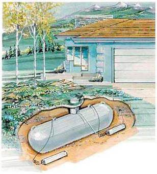

Underground Pipe and Propane Tank Corrosion Protection Systems

Preface - Protecting Propane Tanks
The following was written to answer the questions I have been asked about anodes, cathodic protection, corrosion control, installation practices and the harmful corrosive effect soil has on underground propane tanks. This information is for homeowners, tank manufacturers, suppliers, installers, maintenance men and architects. It explains why cathodic protection from anodes is needed to protect underground tanks from corrosion. This is a brief overview of this subject.
About the Author
Hans Schmoldt is a design engineer, an installation contractor, and a supplier of products that are used to prevent corrosion. He has degrees in Engineering and Geology from the University of Missouri at Rolla and has been certified as a Cathodic Protection Specialist by NACE International, an association of Corrosion Engineers. His career in corrosion prevention began in the 1960's at Schmoldt Engineering in Bartlesville, Oklahoma. He formed Anode Supply Company in 1984 which is known today as Anode Systems Company.
The observations, recommendations and solutions contained in this booklet are based on 25 years of experience working with engineers, suppliers, contractors, and customers. Mr. Schmoldt has been a featured speaker on the subjects of anodes, corrosion control, and cathodic protection of pipelines, underground and above ground storage tanks at seminars sponsored by The National Association of Corrosion Engineers, The Colorado Department of Health, The Environmental Protection Agency, the Colorado Ski Country USA and others. He is the author of several technical articles in trade journals and is active in several non-profit organizations.
Contents and Topics:
©Copyright 1999-2009 Anode Systems Company

124 North 22nd Court Grand Junction, Colorado 81501 (970) 243-4149 or (888) 609-9766 toll-free